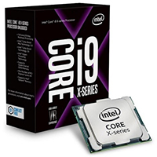
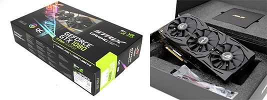
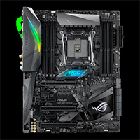
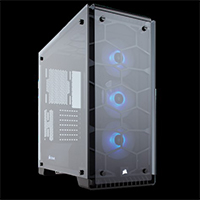
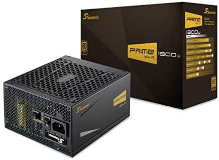

Meet Alfred, my beloved personal computer (PC) built by me in 2017. All parts were sorted and chosen by me; I have carefully researched all my parts to ensure that it would last on long-term.
It packs a 10 – core, 32 – thread i9 – 7900X, it was of the top of the line CPU in 2017. It runs at 3.3 GHz base clock, with a Turbo speeds up to 4.3 GHZ. I was able to overclock it up to 4.7 GHz and with its temperature maintain below 75 degrees which is amazing for this CPU. I also chose it because it supports Quad – Channel memory which allows me to add more RAMs down the road and it would not bottleneck any GPU in the near future.
For my Graphic Card (GPU), it is an Asus ROG Strix 1080 Gaming OC. It is based on Nvidia “Pascal” Architecture, this card features 2560 CUDA cores, 160 TMUs and 8GB of GDDR5X memory. It has a higher Core Clock than the Founders Edition (1835MHz vs 1607 MHz), and I was able to Overclock it to 1936 MHz while maintaining 70 degrees or less on max Performance. Combing with my CPU, I was able to play most games at 1080p max settings and 60 FPS or even more. Here are the lists of games all at 1080p and max details:
To cool the beast of a CPU I decided with the Corsair H150i Pro. I chose an AIO because they are much easier to install, more aesthetically pleasing, and it have the power to cool the super “hot” i9 – 7900X. It also comes with 3 of Corsair ML series fans which is one of the best fans out there in the market. This cooler is the reason I was able to OC my CPU safely while maintain a relatively safe temperature. For my RAM, I went with Corsair Vengeance RGB to match with my Corsair AIO they are 16 GB (2 x 8GB) DDR4 3000MHz C15 kit. For most of my work and gaming needs, I found that 16 GB is more than enough to cover the needs.
For my motherboard I went with the ROG Strix X299 – E gaming as it matches with my graphic card. It feature dual M.2 slots, Aura Sync for all my RGB components, 802.11ac Wifi, supports for DDR4 up to 4133MHz and a USB 3.1 Gen 2 which is perfectly all I need for my build and some rooms for more in the future.
For case, I went with the Corsair Crystal 570X ATX Case with a whopping of 4 tempered glass side panels making it look super sleek and sexy. It comes with 3 of Corsair SP120 RGB fans which allows me to save some budget on other parts instead of fans. Front panel connectors feature 2 USB 3.0, Headphones and microphones plugs, and lighting control for case fans. I chose it because it has room for my 360 AIO and my GPU and even more if I want to upgrade to a bigger GPU, drive cages for my 1TB WD Black HDD and many more.
To see the case visit: Here
For my power supply, I went with Seasonic Prime 1300 W Gold, it is full modular and 80 PLUS Gold Certified, allowing me to easily install it and use it effectively. This will be overkill to most people, but I wanted to be safe and saw this online at an incredible great price so I couldn’t stop myself. Now I do not need to worry about upgrading Power Supply anymore.
To see the PSU: Here
For those who are curious on what else is packed inside this beauty, you can visit this link (https://pcpartpicker.com/list/v8Z4ht) to see the specific parts. I recommend this site for people who are preparing to build your first PC, as it provides you with the retail price for most of your parts and the total price of your build. It also calculates an estimate amount of wattage your PC will draw, this helps with you deciding the most important factor, how much power you need from power supply (Estimated wattage + 150 W).
Conclusion, for my first ever custom-built PC by myself, I was really proud of Alfred and it took me a whole month to carefully plan and sort out the parts to make sure they all fit in perfectly. I am glad I did all those preparations, and I was able to build such a stunning PC. If you are curious on How to build the PC you can visit my guides